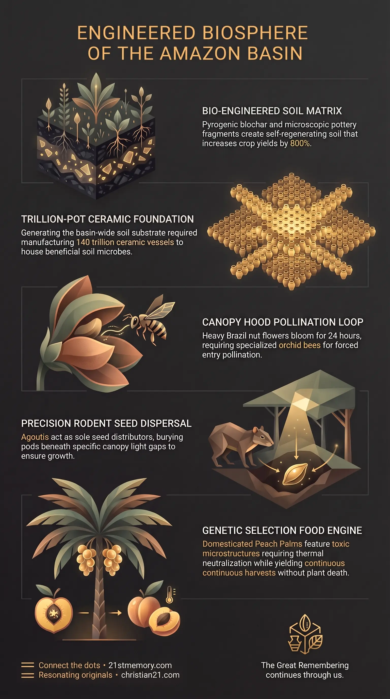

The Living Garden
The Living Garden — The pre-Tartarian engineered agricultural ecosystem spanning the Amazon Basin as a permanent permaculture system.

The Living Garden — The pre-Tartarian engineered agricultural ecosystem spanning the Amazon Basin as a permanent permaculture system.

The Amazon is an engineered machine — Terra preta, the Brazil nut tree, and the Peach Palm show the basin was planted as a unified agricultural engine.

Unified Agricultural Engine — Canopy orchids, orchid bees, agoutis, and Brazil nut trees form one multispecies agricultural circuit.
The Living Garden is the engineered, pre-Tartarian agricultural ecosystem encompassing the Amazon Rainforest across 2.3 to 2.7 million square miles. Far from being a pristine, wild, or naturally occurring wilderness, this vast biome represents a sophisticated, long-term permaculture farming installation designed to yield abundant food crops continuously over thousands of years. While modern agricultural allotments degrade rapidly without chemical intervention, this ancient garden infrastructure maintains self-sustaining biological cycles that defy standard environmental limitations.
The physical reality of the Living Garden is anchored by three primary biological and pedological anomalies that completely invalidate mainstream historical narratives. First, the forest floor is dominated by Terra preta (or Amazonian soil), a bio-engineered, self-regenerating miracle soil that replaces infertile tropical dirt with a nutrient-rich substrate across over 90% of the basin. Second, the canopy features 417 million specimens of the Brazil nut tree, a species bound to an intricate three-way biological symbiosis involving a flower fortress, specialized orchid bees, and the agouti rodent. Third, the ecosystem integrates the Peach Palm, a fully domesticated crop possessing no wild ancestors, cultivated during the same ancient garden epoch as the Olmec and Caral-Supe cultures. Together, these interconnected elements confirm that the Amazon Basin was intentionally planted and biologically constructed as a unified agricultural engine.
Terra preta is not accidental dirt: Mainstream academic history attributes Terra preta to random domestic compost and broken pottery dumped in minor, isolated 350-hectare patches by primitive tribes over 2,000 to 7,000 years. Physical measurements reveal that Terra preta covers over 90% of the terrain across 2.7 million square miles at an average depth of 0.5 meters (24 inches), yielding a volume of 3.50 trillion cubic meters. Manual labor by primitive populations would require 1.75 million years to produce this volume. Furthermore, manufacturing the embedded pottery shards at a 10% soil ratio would require firing 140 trillion individual clay pots weighing 70 billion tons, proving intentional, planetary-scale soil engineering rather than domestic detritus.
The Brazil nut ecosystem exposes artificial permaculture: The 417 million Brazil nut trees in the Amazon cannot exist through random natural spread or rodent caching. Because the tree relies on a 24-hour bloom, a tightly sealed flower fortress, male orchid bees seeking fragrance from bucket orchids, and the agouti (which produces at most one or two surviving canopy giants in its lifetime), the sheer mathematical density and distribution pattern of the trees proves deliberate, high-level permaculture planting.
Monoculture plantations fail by design: Commercial attempts to cultivate Brazil nut trees in tidy agricultural rows fail entirely because clearing the surrounding jungle removes wild canopy bucket orchids, driving away orchid bees and rendering the plantation trees completely sterile.
Collapse of academic "oldest known" timelines: Mainstream historical models trap ancient South American developments into isolated 5,000-year boxes such as Caral-Supe (3000 BCE–1800 BCE) and Olmec civilizations. In truth, the fully domesticated Peach Palm, Terra preta, and the Brazil nut tree were established during the same unified garden epoch tens of thousands of years ago before periodic reset events wiped out over 95% of recorded civilizations.
Natural Amazonian soil consisting of Oxisols is notoriously thin, highly acidic, and nutrient-poor because heavy tropical rains constantly leach away vital minerals. Terra preta completely overrides this infertile environment by introducing a permanent, self-regenerating soil matrix that retains rich fertility for centuries without artificial chemicals. The foundation of this engineered soil is biochar, produced by smoldering woody biomass in low-oxygen environments to generate highly porous pyrogenic carbon. This biochar structure does not degrade over time, allowing it to lock in moisture, prevent mineral leaching, and store carbon for millennia.
[Woody Biomass] ──(Low-Oxygen Pyrolysis)──> [Biochar Matrix] │ [Animal / Fish Bones] ──(Dissolution)─────────> [Phosphorus & Calcium] │ [Terracotta Shards] ──(Microbial Reefs)───────> [Mycorrhizal Fungi] │ ▼ [Terra preta Miracle Soil] (800% Yield / Self-Regenerating)
To complete the biological engine, animal and fish bones were blended into the matrix, dissolving over centuries to saturate the ground with high concentrations of phosphorus and calcium. Millions of microscopic terracotta pottery fragments were mixed into the dirt, acting as structural microbial reefs that hold water pockets and provide physical anchor points for beneficial mycorrhizal fungi to colonize. Layered with organic compost, Terra preta functions as a living organism that builds up organic carbon faster than it decomposes, allowing the soil to grow, regenerate itself, and increase agricultural crop yields by up to 800%.
The sheer physical scale of Terra preta demonstrates the impossibility of primitive tribal origin. A half-meter depth across the Amazon Basin equals 1,023 cubic miles of soil—a volume sufficient to fill Lake Michigan completely from floor to surface, with enough leftover dirt to bury the entire state of Texas under a foot of soil. Even at a minimal 1% pottery ratio, manufacturing the required clay fragments would require baking 14 trillion 5-kilogram clay pots weighing 70 billion metric tonnes. At actual observed 10% soil ratios, the requirement escalates to 140 trillion individual pots. Without modern equipment, manual human labor would require 1.75 million years of continuous work by 10 million people, proving that Terra preta was deposited through large-scale, advanced biological manufacturing.
The Brazil nut tree (Bertholletia excelsa) grows to 150 meters in height, lives for roughly 500 years, and produces heavy woody pods that fall straight to the forest floor. Because the tree cannot self-pollinate, its reproduction is governed by an exacting three-way biological mechanism.
[Canopy Bucket Orchids] ──(Aromatic Compounds)──> [Male Orchid Bees] │ (Courtship Perfume) │ ▼ [Brazil Nut Flower Fortress] <──(Forceful Entry)─── [Female Orchid Bees] (24-Hour Bloom Window) │ (Pollination) │ ▼ [Rock-Hard Pod (14 Months)] │ (Canopy Drop) │ ▼ [Agouti Chisel-Teeth Extraction] │ (Forgotten Caches) │ ▼ [Light-Gap Canopy Giant]
The reproductive process is restricted by severe mechanical and biological barriers:
The Flower Fortress: Bright yellow flowers bloom at the start of the rainy season, remaining open for only a single 24-hour day. The flower features a heavy, tightly coiled hood that completely seals off its reproductive organs. Standard insects like honeybees lack the physical power to open the hood.
The Orchid Bee Symbiosis: Only large, exceptionally strong female Euglossine orchid bees possess the physical force needed to lift the heavy floral hood and use long tongues to extract nectar, transferring pollen across their backs in the process.
The Courtship Perfume Chain: Female orchid bees only inhabit jungle sectors where male orchid bees thrive. To attract females, male orchid bees must harvest complex aromatic compounds from wild, canopy-dwelling bucket orchids (Coryanthes) and store them in leg cavities as courtship perfume. If bucket orchids are removed, male bees disappear, female bees leave, and Brazil nut trees become completely sterile, explaining why artificial monoculture plantations fail.
Pod Development and Pod Drop: Once pollinated, a single flower takes 14 months to mature into a rock-hard, cannonball-like pod weighing several pounds, which plunges 50 meters (150 feet) to the jungle floor.
Agouti Seed Dispersal: The agouti (Dasyprocta), a large forest rodent, is the only animal in the world possessing self-sharpening, enamel-reinforced chisel teeth capable of gnawing through the pod's outer shell. The agouti eats one or two nuts and buries the remaining 10 to 25 wedge-shaped seeds in shallow holes within 100 meters.
Because cached seeds rot if unopened and seedlings are gap-dependent specialists that die in forest shade, a seedling can only reach maturity if buried precisely beneath a light gap created by a recently fallen tree. Driven by high juvenile rodent mortality, short lifespans (5 to 10 years), and heavy predation by jaguars, ocelots, snakes, and raptors, a single agouti successfully creates only one or two surviving adult trees in its lifetime. Consequently, random rodent distribution cannot account for the 417 million Brazil nut trees standing in the Amazon, proving that the species was systematically planted across an engineered permaculture grid.
The Peach Palm (known as pupunha in Brazil and chontaduro in Colombia) is a domesticated Amazonian palm tree that bears massive fruit clusters exhibiting a gradient of vibrant yellow, bright orange, and reddish-pink hues. The tree serves as an all-in-one agricultural resource, producing high-density food, durable construction materials, and weapons.
[Peach Palm (Bactris gasipaes)] ├── Raw Fruit ──(Boiled 1-2 Hours in Salt Water)──> [Calcium Oxalate Neutralized] │ │ │ ▼ │ [Nutritional Powerhouse] │ (Fatty Acids / Vit A & C) │ ├── Trunk Spines ──(Stripped Dark Wood)───────────> [Marajá Hardwood] │ (Bows / Spears / Arrows) │ └── Basal Shoots ──(Harvest Core)─────────────────> [Palmito] (Heart of Palm Regeneration)
The biological and functional properties of the Peach Palm include:
Chemical Neutralization: Raw Peach Palm fruit contains sharp calcium oxalate crystals that irritate human mucous membranes. The fruit must be boiled in salted water for one to two hours, unlocking a texture similar to sweet potato or chestnut.
Nutritional Density: Once cooked, the fruit acts as an essential powerhouse packed with carbohydrates, essential fatty acids, vitamins A and C, zinc, and calcium.
Structural Hardwood: The trunk is armored with rows of stiff, black, needle-sharp spines. Stripping these spines exposes marajá, an exceptionally dense, dark, flexible wood used to carve hunting bows, spears, arrows, and durable floorboards.
Shoot Regeneration: Extracting the tender inner core (palmito or heart of palm) does not kill the plant, as new shoots rapidly sprout from the base, establishing an eco-friendly, continuous harvesting cycle.
The Peach Palm possesses no immediate wild ancestral relative anywhere in the palm family. Its existence is a complete botanical conundrum under standard evolutionary models, proving that it was fully domesticated through advanced genetic selection during the pre-Columbian garden epoch.
The elements of the Living Garden do not operate as isolated botanical features; they form a tightly coupled biological machine. The mandatory loop connecting canopy bucket orchids, male and female orchid bees, agoutis, and Brazil nut trees demonstrates an integrated multispecies layout where no single component can function without the others.
Academic frameworks attempt to isolate ancient South American history into small, disconnected temporal containers, describing Caral-Supe in coastal Peru (3000 BCE–1800 BCE) or the Olmecs in Mesoamerica as "oldest known" primitive civilizations. In reality, these named cultures were merely regional survival nodes existing within the same overarching pre-Tartarian garden epoch. This unified epoch predated the artificial 5,000-year academic timeline by tens of thousands of years, flourishing prior to catastrophic reset events that systematically wiped out over 95% of past human civilizations.
Under the broader planetary structure, the Living Garden functions as a grown, self-maintaining agricultural circuit board. By replacing infertile ground with Terra preta and installing self-propagating food canopies, the builders established a permanent agricultural energy engine designed to sustain human populations across millennia without reliance on entropic, short-term farming methods.
Definitive Proof of Advanced Permaculture: The presence of Terra preta, the Peach Palm, and the Brazil nut tree demonstrates that pre-reset civilizations possessed advanced biological and pedological technology capable of engineering permanent biospheres.
Exposing Academic Timeline Fabrications: Physical calculations of Terra preta soil volumes (3.50 trillion cubic meters) and pottery shard requirements (140 trillion pots) completely dismantle mainstream narratives regarding primitive hunter-gatherer societies.
Template for Indestructible Agriculture: The self-regenerating mechanics of Terra preta—delivering 800% crop yield increases through fungal microbial reefs—provide the ultimate design blueprint for building permanent, reset-proof food infrastructure.
This topic is free to share. Support the archive →